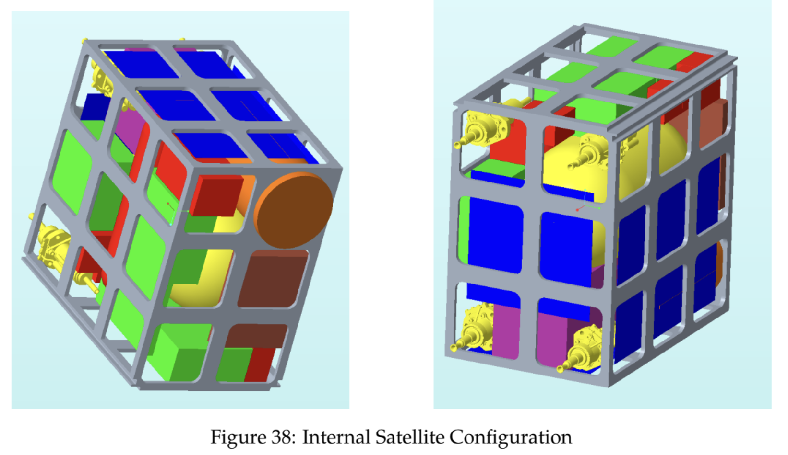
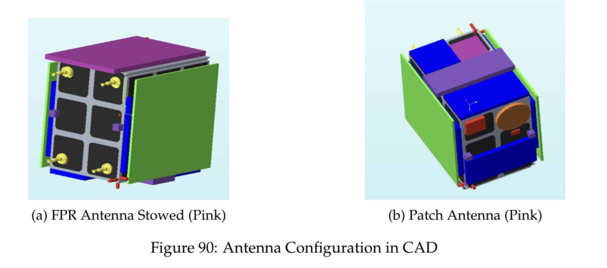
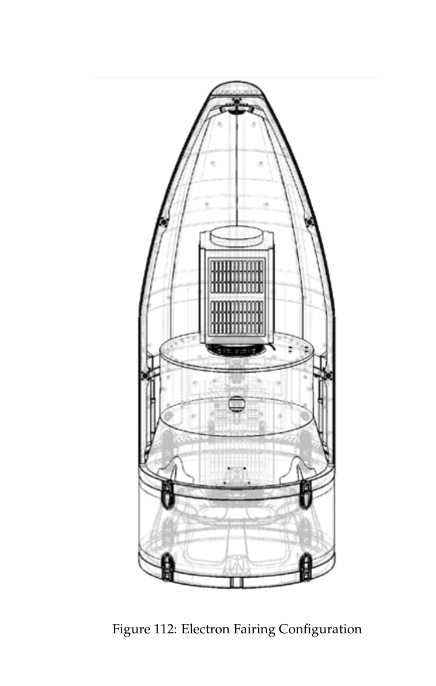
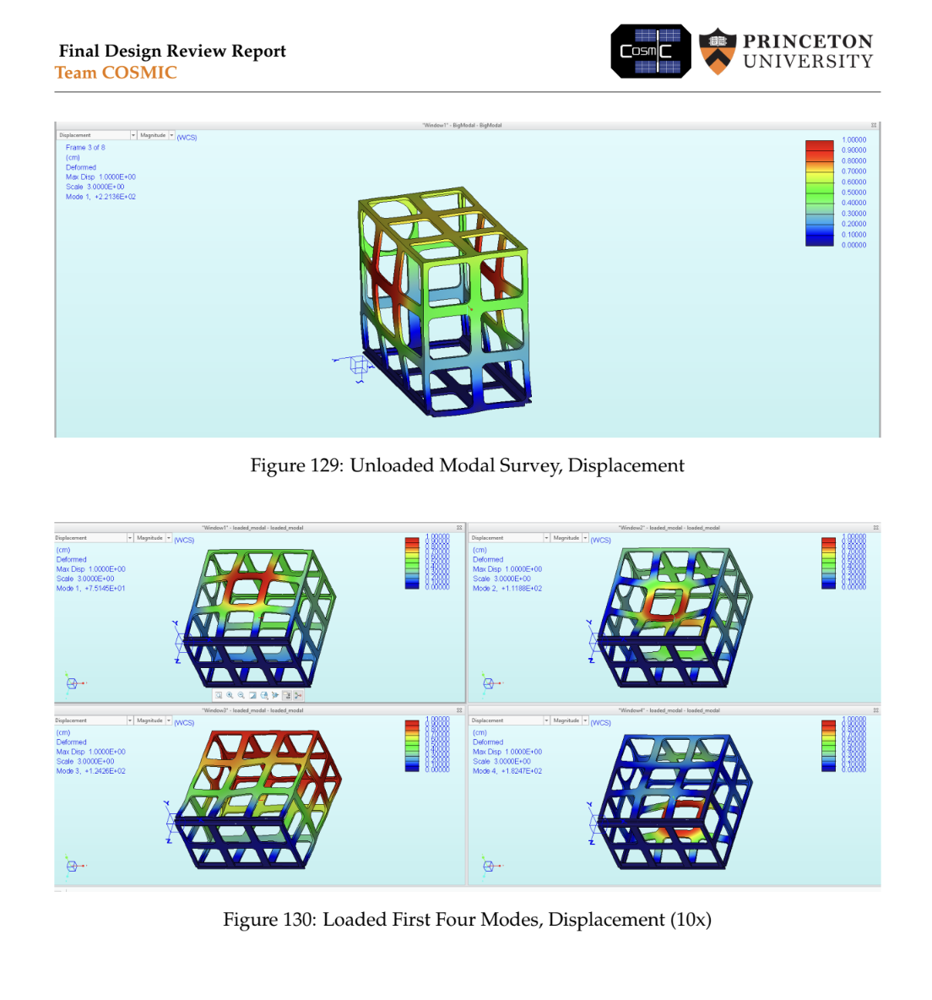
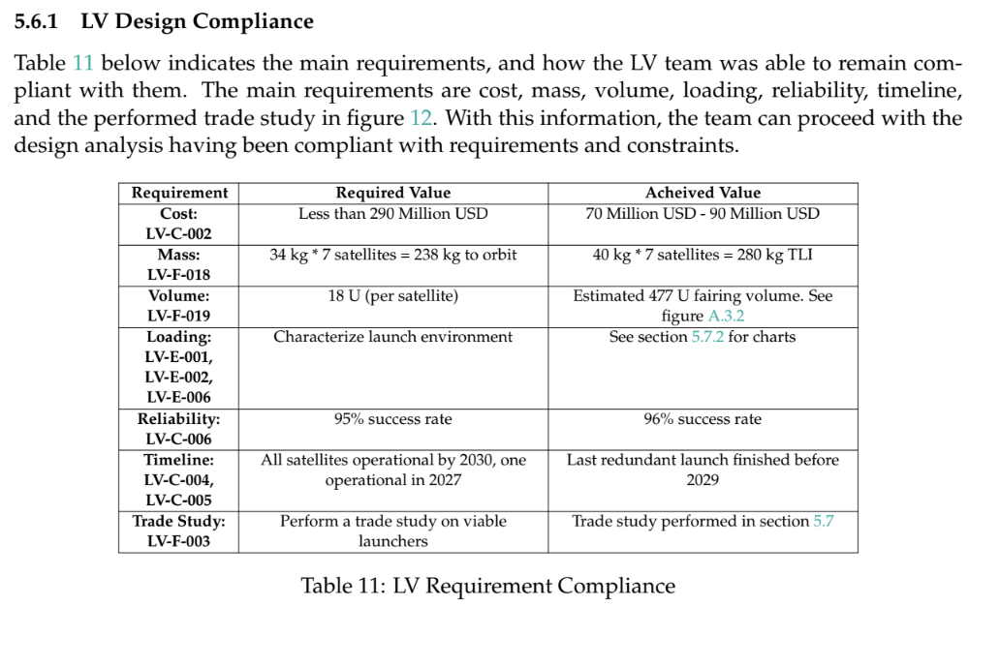
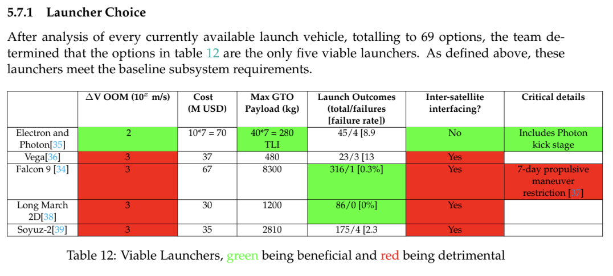
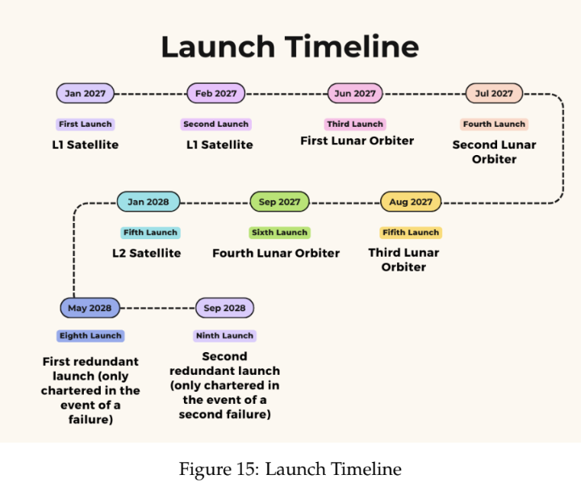

A High-Fidelity Lunar Orbiting Mission Designed by a 21-Person Team


Figures and diagrams from the COSMIC Final Design Report.

Cross-section of the Electron launch vehicle fairing with the CubeSat payload inside.

FEA modal survey showing unloaded and loaded displacement modes of the CubeSat structure.

Requirements compliance table verifying cost, mass, volume, reliability, and timeline for the launch vehicle.

Trade study comparing 5 viable launchers out of 69 analyzed, evaluating cost, payload, and failure rates.

Full mission launch timeline spanning 2027-2028, with 7 primary launches and 2 redundant backups.